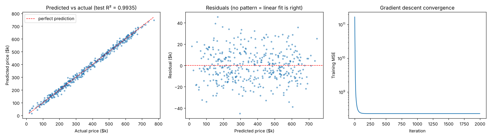

Linear Regression
Draws the straight line that sits as close as possible to every point, then reads predictions off that line.
Try it
Experiment: Press Add an outlier and watch one point drag the whole line. Then try Watch gradient descent with a large step size to see it diverge.
The idea
Imagine plotting house size against price. The points roughly follow a rising trend. Linear regression finds the single straight line that best follows that trend, so you can read off a price for any size.
“Best” has a precise meaning: for every point, measure the vertical gap to the line (the residual), square it, and add the squares up. The winning line makes that total as small as possible. In the demo the squares are drawn for you; the line always minimises their combined area.
How it works, step by step
- Write the prediction as
ŷ = w·x + b: a slopewand an interceptb. With many features it is one weight per feature. - Measure the error with the mean squared error: the average of
(y − ŷ)²over all points. - Find the weights that minimise it, either in one step with the normal equations (the exact answer) or by gradient descent (small downhill steps).
- Check the fit with R², the share of the variation in
ythe line explains (1 = perfect, 0 = no better than predicting the average).
MSE = (1/n) Σ (yᵢ − ŷᵢ)²
Closed form: w = (XᵀX)⁻¹ XᵀySquaring punishes big misses far more than small ones, which is also why a single outlier can drag the line.
Strengths and weaknesses
Strengths
- Simple, fast and fully interpretable: each weight is the change in y per unit of that feature
- Works on small data sets
- The baseline every other regression model should beat
Weaknesses
- Assumes the relationship is a straight line (or a flat plane)
- Outliers pull the line towards them (try the outlier button)
- Correlated features make individual weights unstable
Use it when: You predict a number, the trend is roughly linear, or you need to explain the effect of each feature.
Avoid it when: The pattern clearly curves, has thresholds or interactions. Tree ensembles usually do better there.
In this repository
Dataset: Synthetic housing data (2,000 houses, linear by design)
The data was generated with a truly linear price rule, which is why R² reaches 0.99. On real data such as California Housing, plain linear regression scores around 0.6.

from sklearn.linear_model import LinearRegression
model = LinearRegression().fit(X_train, y_train)
print(model.coef_, model.intercept_) # one weight per feature
print(model.score(X_test, y_test)) # R² on unseen dataFull code: models/01_linear_regression. Train it on your own data with
python models/01_linear_regression/train.py --data your.csv --target column.
Check yourself
It minimises the (mean) squared residuals, which is why the demo draws squares.
Squared errors make a far-away point very costly, so the line moves to reduce it.
R² compares your errors with those of the constant average prediction.
Answer all three correctly to mark this model as learned.